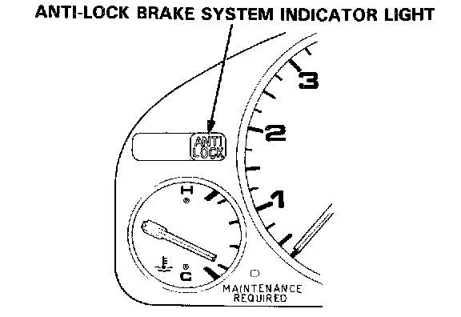
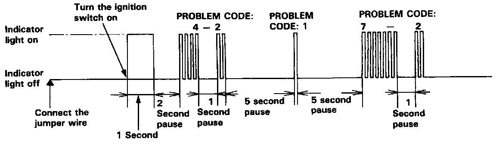
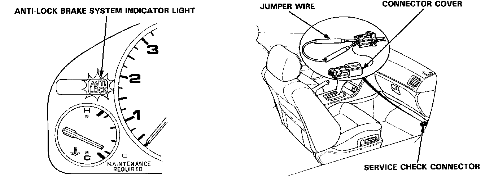

ALB Malfunction Types and Related Codes
Temporary Driving Conditions:1. The anti-lock brake system indicator light comes on and the control unit memorizes the problem under certain conditions.
NOTE: Problem codes explained below.
- The tire(s) adhesion is lost due to excessive cornering speed.
Problem codes: 5, 5-4, 5-8.
- The vehicle loses traction when starting from a stuck condition on a muddy, snowy, or sandy road.
Problem code: 4-1, 4-2, 4-4, 4-8.
- When the parking brake is applied for more than 30 seconds while the vehicle is being driven. Problem code: 2-1.
- The vehicle is driven on an extremely rough road.

2. The anti-lock brake system is OK if the anti-lock brake system indicator light goes off after the engine is restarted.
3. If you receive a customer's report that the anti-lock brake system indicator light sometimes comes on, check the system using the ALB checker to confirm whether there is any trouble in the system.
4. The anti-lock brake system indicator light will come on and the control unit will memorize a problem code when there is insufficient battery voltage to the control unit. An example would be when the battery is so weak that the car must be jump-started. After the battery is sufficiently recharged, the anti-lock brake system indicator light will work normally after the engine is stopped and restarted.
However, after recharging the battery, the problem code must be cleared from the control unit's memory by disconnecting the ALB 2 (15 A) fuse for at least 3 seconds.
Anti-lock Brake System Indicator Light Circuit:
CAUTION: Use only the digital multimeter to check the system.
1. The indicator light does not go on when the ignition switch is turned on.
Check the following items. If they are OK, check the control unit connectors. If not loose or disconnected, substitute a known-good control unit and recheck:
- Blown anti-lock brake system indicator light bulb.
- Open circuit in YEL wire between No.13 (7.5 A) fuse and gauge assembly.
- Open circuit in BLU/RED wire between gauge assembly and control unit.
- Loose component grounding of the control unit to the body.
2. The anti-lock brake system indicator light remains ON after the engine is started, however the anti-lock brake system indicator light does not blink any code or sub-code. Check the following items:
- Loose or poor connection of the wire harness at the control unit.
- Faulty ALB 2 (15 A) fuse.
- Open circuit in WHT wire between ALB 2 (15 A) fuse and control unit.
- Open circuit in YEL/BLK wire between fuse No. 3 (15 A) and fail-safe relay(s).
- Open or short circuit in the YEL/GRN wire between fail-safe relays.
- Short circuit in BLU/RED wire between gauge assembly and control unit.
- Open circuit in WHT/BLU wire between alternator and control unit.
If the problem is not found, substitute a known-good control unit and recheck whether the anti-lock brake system indicator light remains ON.
Comes on and remains on while running:
1. Stop the engine.
2. Turn the ignition switch on and make sure that the anti-lock brake system indicator light comes on.
3. Restart the engine and check the anti-lock brake system indicator light.
- There is no problem in the anti-lock brake system if the anti-lock brake system indicator light goes off.
- Go to step 4 if the anti-lock brake system indicator light goes off and then comes back on.
4. Stop the engine.
5. Disconnect the service check connector from the connector cover located under the glove box. Connect the two terminals of the service check connector with a jumper wire.
6. Turn the ignition switch on, but do not start the engine.
7. Record the blinking frequency of the anti-lock brake system indicator light. The blinking frequency indicates the problem code.

CAUTION: Before starting the engine, disconnect the jumper wire from the service check connector, or else the he Check Engine light will stay on with the engine running.

NOTE:
- The control unit can indicate three problem codes (one, two or three problems).
- If the anti-lock brake system indicator light does not light, see Troubleshooting of Anti-lock Brake System Indicator Light Circuit.
- If you miscount the blinking frequency, turn the ignition switch off then on to cycle the anti-lock brake system indicator light again.
- After the repair is completed, disconnect the ALB 2 (15 A) fuse for at least 3 seconds to erase the control unit's memory. Then turn the ignition key on again and recheck.
- The memory is erased if the connector is disconnected from the control unit or the control unit is removed from the body.